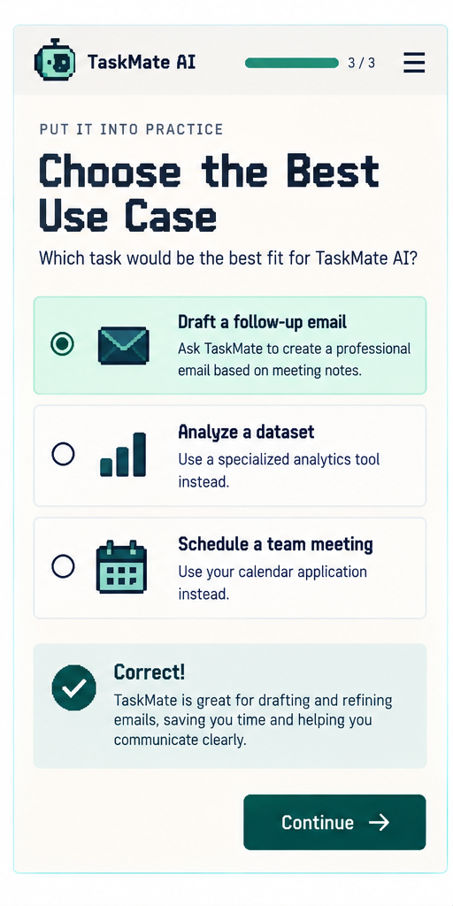
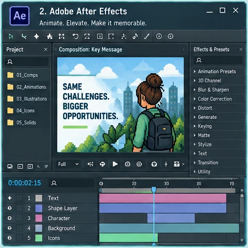

Define what the seller needs to explain, recognize, decide, or do after the learning.
Projects / Instructional Design
Instructional Design
I design sales and partner learning for complex products, from short product-launch assets and scenario practice to live workshops and multi-course certification paths.
Sales EnablementPartner LearningRise + StorylineScenario DesignLMS Delivery
Instructional Design in Practice
From complete learning paths to focused practice.
Representative visuals show how I combine content structure, media, scenarios, feedback, and reusable learning components.



Capabilities
The deliverable changes the work.
A product launch, certification, live workshop, and performance tool need different levels of content, practice, development, review, and maintenance. Choose a work type to see what I handle in each one.
eLearning
Build seller learning from source material through launch.
I turn approved product, technical, and sales content into courses and learning paths with practice, assessment, review, LMS delivery, and a plan for future updates.
Sales relevancePractice + assessmentLMS delivery
Organize source material, objectives, course structure, scenarios, assessments, and approval points before development.
Develop in Rise, Storyline, or other tools, then coordinate SME review, QA, accessibility checks, and LMS testing.
Keep editable source files, ownership, review notes, and reporting or learner feedback available for the next update.
Project Areas
Explore instructional design work
Browse by deliverable and open the examples to see the actual design and development decisions.
Practice + Decision Making
Interactive Learning
Browser-based sales practice built around classification, scoring, feedback, and decision-making.
Examples: MEDDPICC Qualification Lab and Pursuit Determination Lab.
Explore Interactive LearningShort-Form Sales Learning
Microlearning & Performance Support
Focused learning for product launches, industry positioning, quick practice, and follow-up resources.
Examples: product-launch microlearning and two vertical-positioning modules.
Explore MicrolearningMedia Production
Multimedia Training
Video, motion, audio, graphics, and interactive media used inside larger learning projects.
Examples: AI-presenter video, Storyline interactions, certification media, and launch assets.
Explore MultimediaContent + Facilitation
Live Training
Facilitator-led content development and virtual delivery for sales and partner audiences.
Example: MEDDPICC workshop facilitation for internal sellers and external partners.
Explore Live TrainingCourses + Certification
Complete eLearning Pathways
Connected courses and certifications with objectives, practice, assessment, LMS delivery, reporting, and maintenance.
Example: a multi-course enterprise sales certification for internal sellers and channel partners.
Explore Complete eLearning PathwaysOther Work
Beyond instructional design
My portfolio also includes AI evaluation, LMS administration, and automation/reporting projects that sit around the learning work.
AI Quality
AI Training and Evaluation
Task-based output evaluation, rubric scoring, calibration, and actionable evaluator feedback.
Learning Platforms
LMS Administration & System Operations
Absorb and Docebo content administration, learner paths, certifications, migration testing, support, and reporting.
Systems + Automation
Systems and Workflows
Python, Selenium, data analysis, and reporting workflows that support LMS and enablement operations.